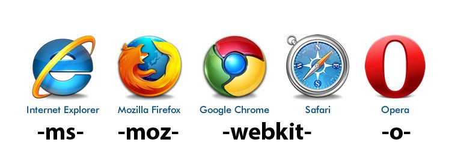

CSS3
Introducción
Estructura vs presentción
CSS3 vs CSS2
- Mejora en los selectores
- Reduce la "clasitis" y "divitis" en html
- Nuevos estilos: sombra, opacidad, esquinas redondeadas...
- Mejoras en tipografías
- Transformaciones
- ...
CSS3 vs CSS2
- Reduce peticiones de imágenes gracias al posicionamiento de fondo
- Mejora la rapidez de carga de la página
Novedades
- Bordes
- Fondos
- Color
- Efectos en texto
- Layot multicolumna
- Transiciones
- Selectores
- Media queries
Bordes

Fondos múltiples
Color y opacidad
Webfonts
Efectos en texto
Layout multicolumna
Transformaciones
Pseudoclases
Selectores de atributos
Media queries
Prefijos navegadores

Prefijos navegadores
Referencia css del W3C
El World Wide Web Consortium genera recomendaciones y estándares que aseguran el crecimiento de la web a largo plazo.
Fundado por Tim Berners-Lee en 1994.
Para consultas específicas.
¿Presentación en PDF?
- Clic aquí
- CTRL/CMD + P
- Guardar como PDF
A trabajar...